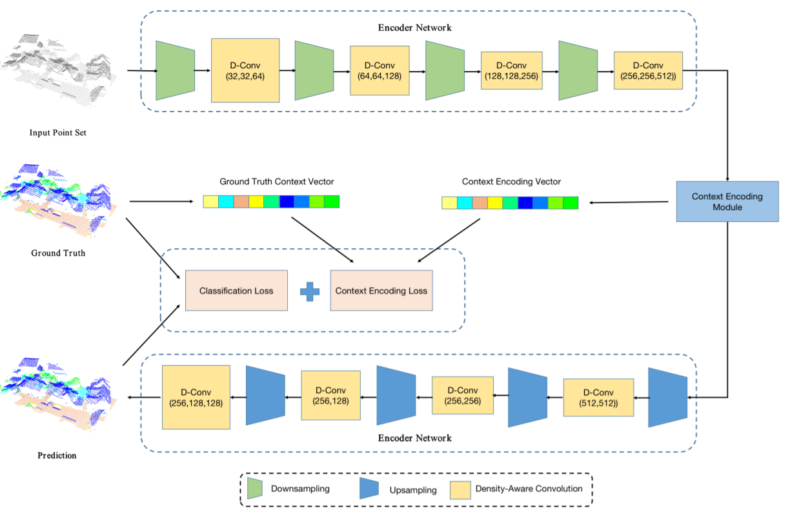
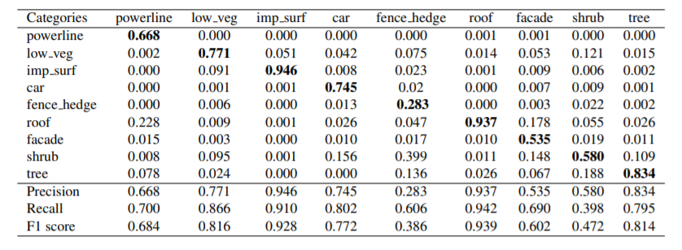
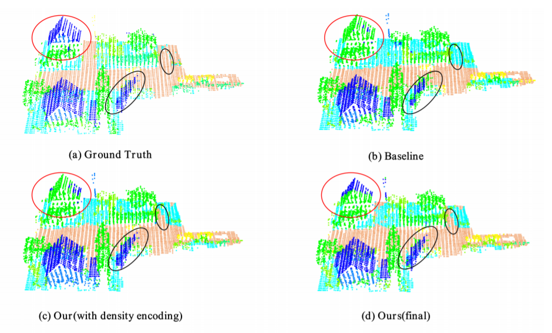

| Status: | Undergraduate Student |
| Program: | Computer Science |
| School: | Courant Institute of Mathematical Science, New York University |
| RA Period: | From 2019-09 to 2020-05 |
| I'm a Ph.D. student ad Duke University. Before that, I was a research assistant in NYU Multimedia and Visual Computing Lab, advised by Professor Yi Fang. I am broadly interested in 3D Computer Vision, Pattern Recognition and Deep Learning. |
To better address challenging issues of the irregularity and inhomogeneity inherently present in 3D point clouds, researchers have shifted their focus from designing hand-crafted point features toward learning 3D point signatures using deep neural networks for 3D point cloud classification. Recently proposed deep learning-based point cloud classification methods either apply 2D CNNs on projected feature images or apply 1D convolutional layers directly on raw point sets. These methods cannot adequately recognize fine-grained local structures caused by the uneven density distribution of the point cloud data. In this paper, to address this challenging issue, we introduced a density-aware convolutional module that uses the pointwise density to reweight the learnable weights of convolution kernels. The proposed convolution module can fully approximate the 3D continuous convolution on unevenly distributed 3D point sets. Based on this convolution module, we further developed a multiscale fully convolutional neural network with downsampling and upsampling blocks to enable hierarchical point feature learning. In addition, to regularize the global semantic context, we implemented a context encoding module to predict a global context encoding and formulated a context encoding regularizer to enforce the predicted context encoding to align with the ground truth encoding. The overall network can be trained in an end-to-end fashion with the raw 3D coordinates and the height above ground as inputs. Experiments on the International Society for Photogrammetry and Remote Sensing (ISPRS) 3D labeling benchmark demonstrated the superiority of the proposed method for point cloud classification. Our model achieved a new state-of-the-art performance with an average F1 score of 71.2% and improved the performance by a large margin on several categories (such as powerline, impervious surface, car, and facade).
Figure 1: The pipeline of the proposed method.
This project introduces a novel density-aware convolution module that directly applies convolutions on irregular point clouds to learn representative point features. Figure.1 shows overview of the proposed method for airborne point cloud classification. Our model starts with an encoder network to extract high-level semantic features using a newly proposed density-aware convolution module. Then, a context encoding module was adopted to learn a global context encoding, which was further fed into a regularization module to enforce the predicted context encoding to be aligned with the ground truth encoding. Finally, a decoder network with a successive density-aware convolution module and upsampling block were used to generate per-point classification results.
Table 1: The classification confusion matrix of our DANCE-NET model.
In this section, we conduct experiments to demonstrate the effectiveness of the proposed DANCE-NET model for airborne LiDAR point cloud labeling. To quantitatively evaluate the classification performance, we calculated the classification confusion matrix, precision, recall and F1 score of each category and listed the results in Table 1. As we can see in this Table, our proposed model obtained F1 scores higher than 70% for six of the categories, including powerline, low vegetation, impervious surfaces, car, roof, and tree. In addition, our model achieved a reasonable classification performance on the facade category, while the classification performances on the fence/hedge and shrub categories were relatively lower. As Table 1 shows, most of the fence/hedge points were incorrectly classified as shrubs. One of the main reasons is that the fence/hedge category contains fewer points and presents similar spatial distribution and topological characteristics with the shrub category, which causes the model to not be fully trained and thus hinders the model from differentiating these two categories. Although powerline and car categories also have fewer points in the dataset, they present completely different characteristics from other categories and thereby acquired higher classification performance.
Figure 2: The classification results with different model configurations.